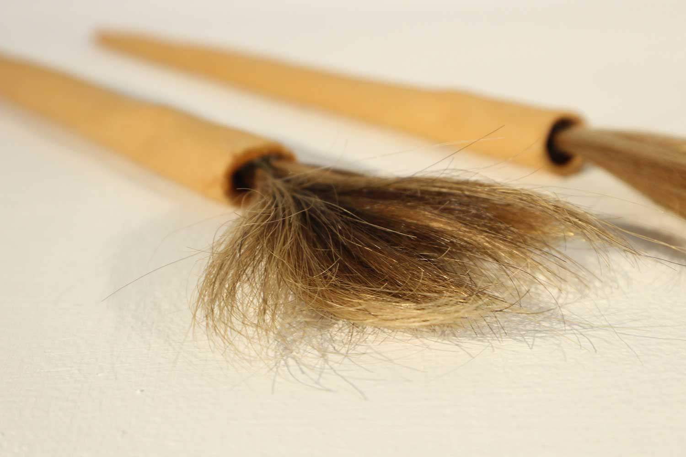
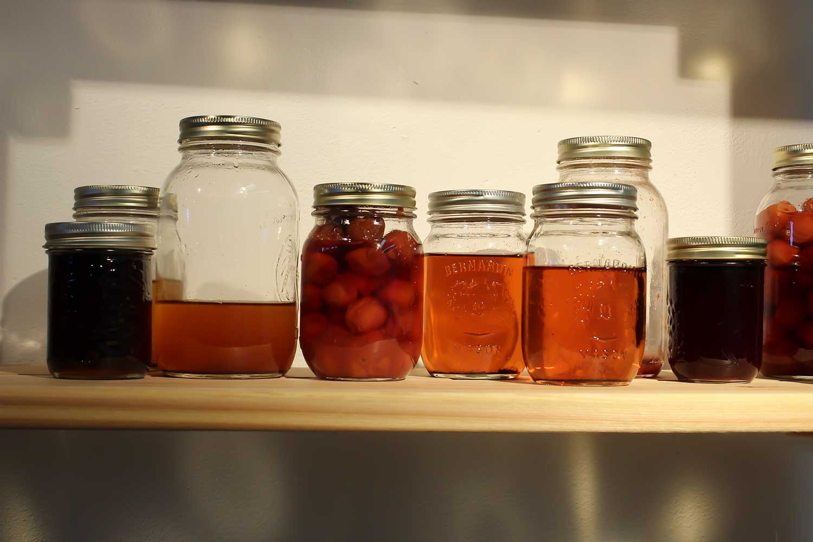
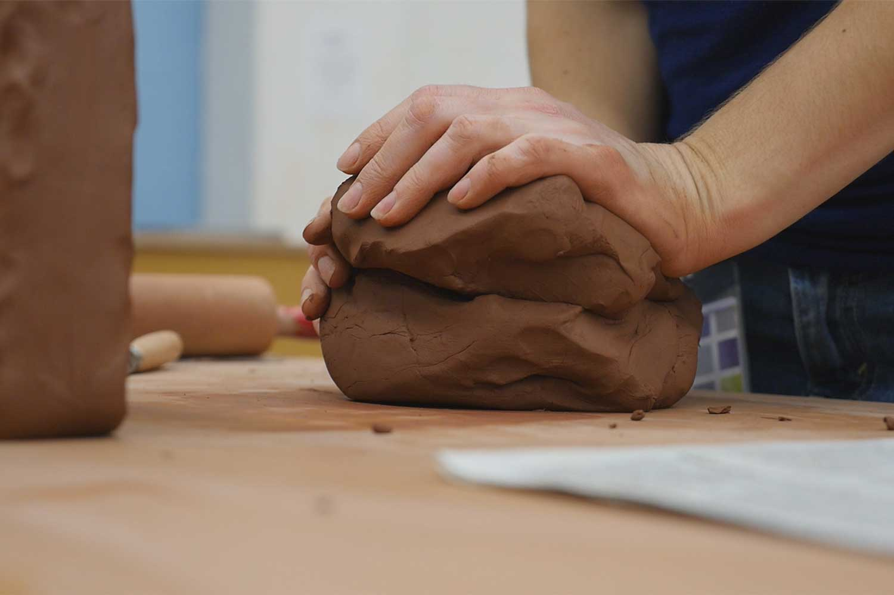
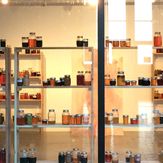
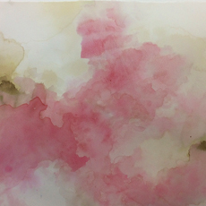
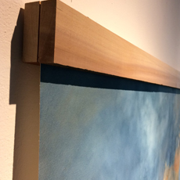
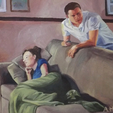
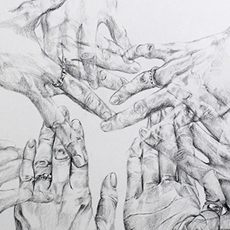

Amy Lynn Hein
Statement
Curriculum Vitae
Gallery
Instagram
Contact
Menu ☰
“You never give up anything, ever, from the past.”
- Helen Frankenthaler




Gather. Preserve. Repeat.
2018

Collection
2017 - 2018

Painting Performances
2017

Past Work -
Paintings

Past Work -
Drawings + Sculptures